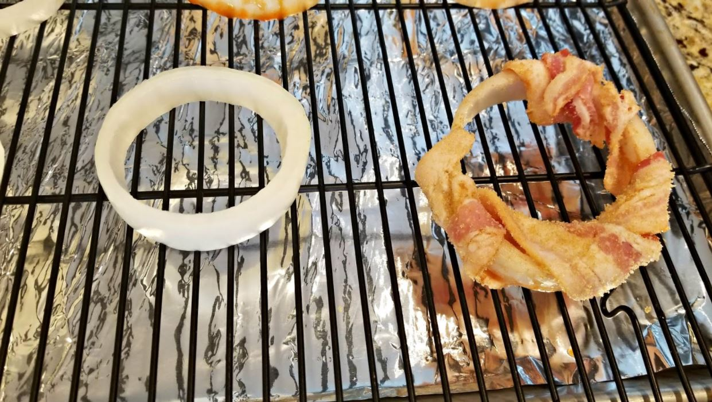

Tiempo de lectura: 0 min
Los aros de Hudalla son un tipo de aros de cebolla que consiste en cebolla envuelta en bacon recubierto con una mezcla de azúcar y especias caramelizadas al horno. Los aros reciben el nombre del planeta Hudalla, que tenía unos de los anillos más grandes de la galaxia.
Nos cuenta su creador, Chelsea Monroe-Cassel:
Para esta receta, quería ofrecer algo que la gente normalmente no hace en casa: aros de cebolla. Pero estos no son aros de cebolla cualquiera. ¡Son aros de Hudalla envueltos en tocino y condimentados con especias!
Para realizar esta receta necesitaremos:
Una vez tenemos los ingredientes, no tiene mucho misterio su elaboración. Envolvemos los aros de cebolla con el tocino previamente condimentado con la salsa picante y el garam masala, esparcimos el azúcar moreno por encima y al horno a 180ºC durante 20 minutos, ¡a disfrutarlas!